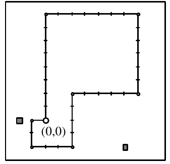

1993 ACM International Collegiate Programming Contest Finals · Problem D
Imagine a country whose cities have all their streets laid out in a regular grid. Now suppose that a tourist with an obsession for geometry is planning expeditions to several such cities. Starting each expedition from the central cross-roads of a city, the intersection labelled (0,0), our mathematical visitor wants to set off north, south, east or west, travel one block, and view the sights at the intersection (0,1) after going north, (0,-1) after going south, (1,0) after going east or (-1,0) after going west. Feeling ever more enthused by the regularity of the city, our mathematician would like to walk a longer segment before stopping next, going two blocks. What’s more, our visitor doesn’t want to carry on in the same direction as before, nor wishes to double back, so will make a 90° turn either left or right. The next segment should be three blocks, again followed by a right-angle turn, then four, five, and so on with ever-increasing lengths until finally, at the end of the day, our weary traveller returns to the starting point, (0,0).
The possibly self-intersecting figure described by these geometrical travels is called a golygon.
Unfortunately, our traveller will making these visits in the height of summer when road works will disrupt the stark regularity of the cities’ grids. At some intersections there will be impassable obstructions. Luckily, however, the country’s limited budget means there will never be more than 50 road works blocking the streets of any particular city. In an attempt to gain accountability to its citizens, the city publishes the plans of road works in advance. Our mathematician has obtained a copy of these plans and will ensure that no golygonal trips get mired in molten tar.
Write a program that constructs all possible golygons for a city.
Since our tourist wants to visit several cities, the input file will begin with a line containing an integer specifying the number of cities to be visited.
For each city there will follow a line containing a positive integer not greater than 20 indicating the length of the longest edge of the golygon. That will be the length of the last edge which returns the traveler to (0,0). Following this on a new line will be an integer from 0 to 50 inclusive which indicates how many intersections are blocked. Then there will be this many pairs of integers, one pair per line, each pair indicating the x and y coordinates of one blockage.
For each city in the input, construct all possible golygons. Each golygon must be represented by a sequence of characters from the set {n,s,e,w} on a line of its own. Following the list of golygons should be a line indicating how many solutions were found. This line should be formatted as shown in the example output. A blank line should appear following the output for each city. Sample input and output are below.
2 8 2 -2 0 6 -2 8 2 2 1 -2 0
wsenenws Found 1 golygon(s). Found 0 golygon(s).
